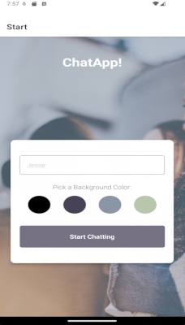

ChatApp is a mobile application designed to deliver a seamless messaging experience with an intuitive interface. Key features include: Entering a username and selecting a background color on the start page. Engaging in real-time conversations within a chat interface. Sending text messages, images, and location data. Accessing messages offline.
ChatApp was developed as a web application exercise during my studies at CareerFoundry.
The goal was to create a chat application where users could: Choose a username and customize the chatroom’s background color. Exchange messages and images, with all data stored in a backend database. View their conversation history even when offline.
The client-side of ChatApp prioritizes simplicity and ease of use. Users only need to:
Once inside, they can send and view messages in real time.
This component connects the frontend and backend, utilizing: React Native for the mobile app framework. Firebase (Firestore database & storage) for backend services. React Navigation for screen management.
All messages and images are stored in a Google Firestore database, ensuring users can retrieve previous conversations without data loss.
As my first mobile app project, I faced a learning curve in mobile-first design and development.
Testing and debugging were more streamlined compared to web applications, allowing for efficient issue resolution.
If I were to expand the app, I would add: